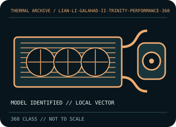

[ INDIVIDUAL COMPONENT // COOLING ]
LIAN LI Galahad II Trinity Performance 360
Performance-tuned 360 mm AIO with a 32 mm radiator and three 28 mm LCP fans.

IDENTIFICATION: Match the complete model, regional SKU, revision, and supplied socket kit. Similar names and radiator classes do not guarantee identical brackets, dimensions, leads, or warranty terms.
Manufacturer specifications and compatibility
| Exact model / listing | LIAN LI Galahad II Trinity Performance 360 |
|---|---|
| Radiator dimensions and thickness | 397 × 120 × 32 mm aluminum radiator; with the supplied 28 mm fans, reserve approximately 60 mm before screws, fittings, and case rail. |
| Fans | 3 × 120 × 28 mm LCP fans, daisy-chainable with a single cable; connect according to the included fan/control harness. |
| Pump / block | Pump rated up to 4,200 rpm; use the product’s dedicated pump header lead. |
| Supported CPU sockets | Intel LGA 1700 / 1200 / 115x; AMD AM5 / AM4. Verify bracket and orientation against the included model-specific guide. |
| Tube length / construction | Flexible sleeved tubing with 45-degree rotary fittings; route without kinks and verify reach against the case layout. |
| Power, fan, lighting, and display connectors | Daisy-chain fan/control cable, pump power/tach connection, and 5 V ARGB/control wiring as included. Check the exact bundle’s controller; do not connect addressable lighting to a 12 V RGB header. |
| Warranty | LIAN LI warranty duration is region/SKU dependent; check the current terms for the Galahad II Trinity Performance and retain the receipt and serial. |
| Case compatibility | 360 mm radiator mount required; this Performance radiator/fan stack is approximately 60 mm thick. Verify both mounting clearance and the hose’s tight bends before selecting top/front placement. |
| Motherboard compatibility | Socket listed Intel/AMD only with supplied retention hardware. Plan compatible PWM/pump and 5 V ARGB/controller headers; check DIMM/VRM clearance and motherboard header limits. |
Warranty, maintenance, and safe installation
Sealed liquid loop; do not open or refill. Disconnect power before cleaning and keep fan blades still. Inspect rotary fittings and hose sleeves; cease operation on leaks, abnormal pump noise, or thermal failure. Follow LIAN LI guidance for controller and lighting wiring.
- Install only with the model-specific manual and included retention hardware. Do not operate a pump dry or allow tubes to kink or rub against sharp edges.
- After installation, verify pump and fan tachometer/control operation and monitor CPU temperature under a repeatable load before normal service.
- Warranty statements are a reference, not a substitute for current regional terms; preserve the serial number and purchase record and contact the manufacturer for service.
Manufacturer sources
- LIAN LI — Galahad II Trinity Performance product specificationsManufacturer dimensions, radiator, fans, pump, socket, and product feature information.
- LIAN LI — Galahad product support and documentationManufacturer technical support route for current model-specific installation and warranty documentation; confirm revision-specific instructions.
Static catalog reference only. Verify the precise SKU, manual revision, and current local warranty documentation before installation.